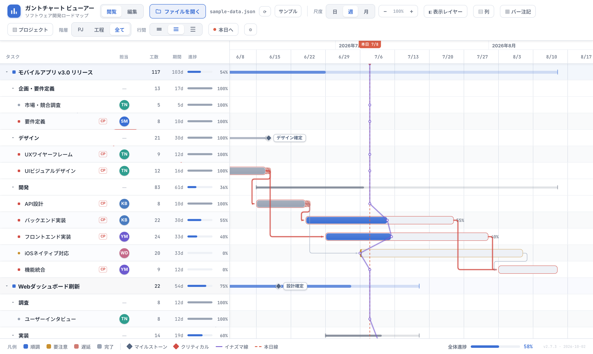
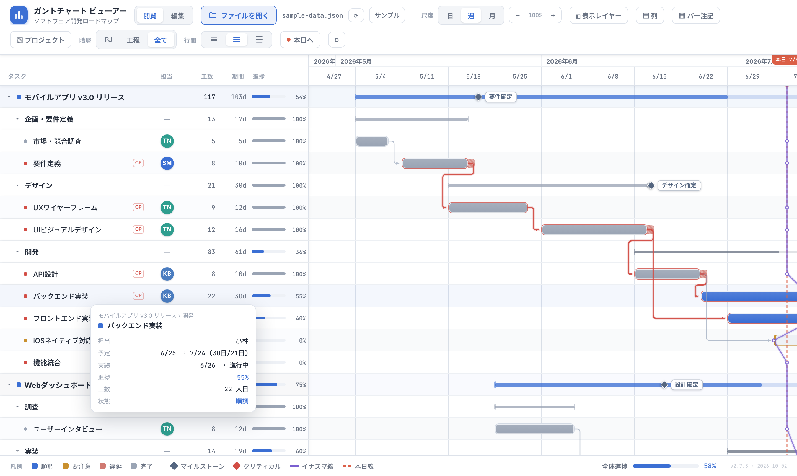
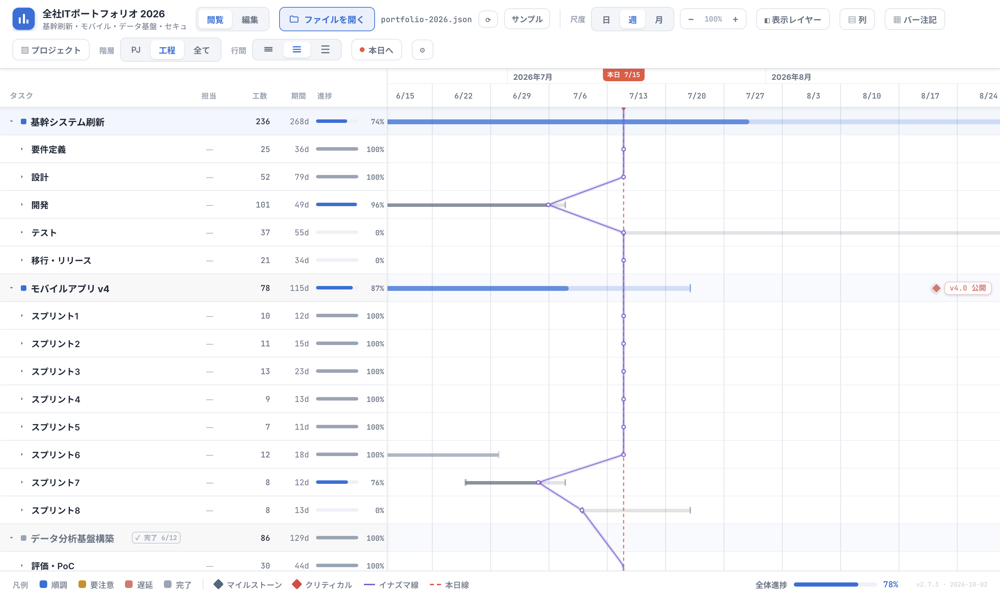
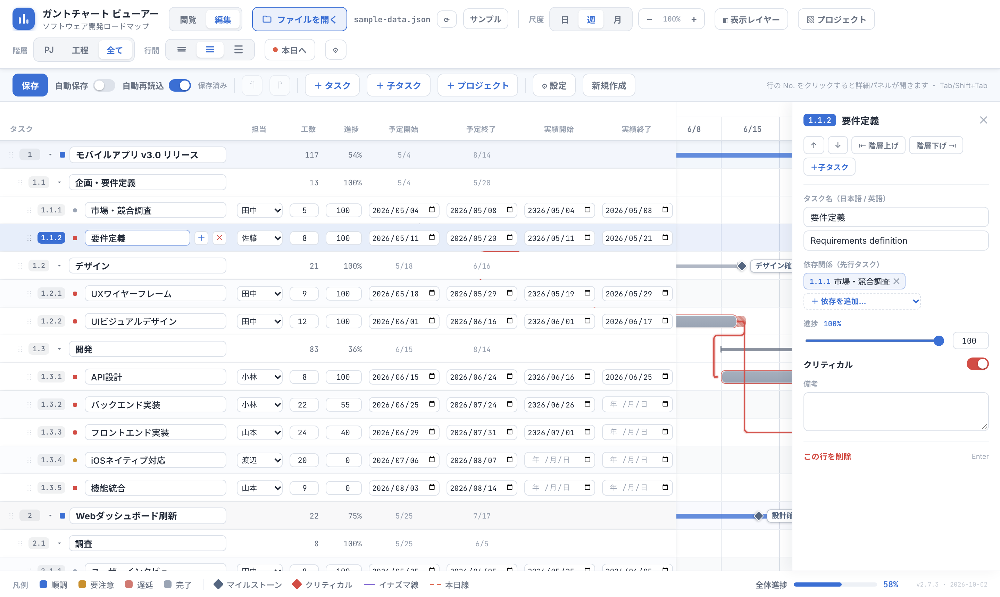
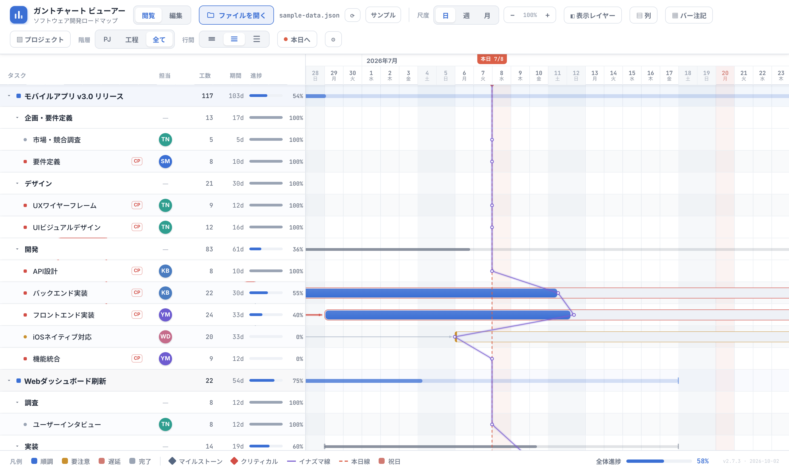
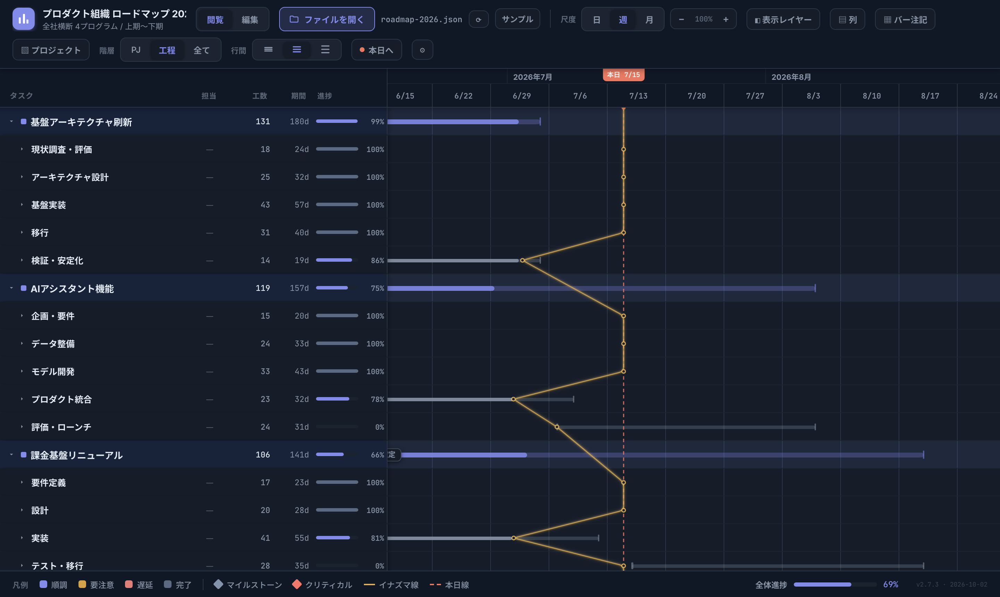

AI に計画を書かせて、ブラウザで開くだけ。予定と実績、遅れ、依存関係、クリティカルパスまで、ひと目でわかるガントチャートになります。

報告資料を作らなくても、この画面を見せれば話が通じる。そのための表現を詰め込みました。
予定の枠の中に、実績と進捗を塗りで重ねます。紫のイナズマ線は各タスクの進み具合を本日線から結んだもので、左に出っ張っている所が遅れです。

いくつものプロジェクトを縦に並べて俯瞰できます。階層は何段でも OK。「PJ / 工程 / 全て」のボタンで、見たい粒度に一瞬で切り替えます。

「編集」に切り替えると、表計算のようにセルを直接書き換えられます。バーをドラッグすれば日程が動き、Ctrl+S で元のファイルに上書き保存。

日・週・月の 3 つの尺度を切り替えられます。日単位では週末と祝日に網掛けをし、ホバーで祝日名を表示。土日稼働や特別稼働日も JSON で指定できます。

「クリーン・デンス・ダーク」の 3 スタイルと 11 色の配色を自由に組み合わせられます。行間や表示する列・レイヤーも好みに合わせて。設定はブラウザが覚えています。

色と記号の意味です。画面下の凡例と同じです。
覚えておくと便利な操作です。Ctrl は Mac では ⌘。
| 尺度を切り替える | ツールバーの「日 / 週 / 月」 |
| 階層をまとめて開閉 | 「PJ / 工程 / 全て」 |
| 行を選んで移動 | ↑↓、←→ で開閉 |
| タスクの詳細を見る | バーやタスク名にマウスを乗せる |
| 長いタスク名を全部見る | 「タスク」見出しの右端をドラッグ／ダブルクリックで自動調整 |
| 今日の位置に戻る | 「本日へ」 |
| 表示する要素を選ぶ | 「表示レイヤー」「列」「バー注記」 |
| 見た目を変える | ⚙ メニュー（スタイル・配色・言語） |
| 編集モードにする | ツールバーの「編集」 |
| 日程を動かす | バーをドラッグ（端をつかむと伸縮） |
| 階層を下げる／上げる | Tab ／ Shift+Tab |
| 詳細パネルを開く | 行番号をクリック、または Enter |
| 元に戻す／やり直す | Ctrl+Z ／ Ctrl+Shift+Z |
| 保存する | Ctrl+S（元の JSON に上書き） |
| 保存を自動にする | 編集バーの「自動保存」をオン |
| 行の並べ替え | 行の左端 ⋮⋮ をドラッグ |
開いた JSON はブラウザの中だけで処理されます。どこにもアップロードされません。
| 機能 | Chrome / Edge | Safari / Firefox |
|---|---|---|
| 表示・閲覧・編集 | ● | ● |
| 元のファイルに上書き保存 | ● | ダウンロードで保存 |
| ファイルの変更を自動で読み直す | ● | ⟳ で選び直し |
| リロード後に前回のファイルを開く | ● | — |
コピーして、最後の「作りたい内容」だけ書き換えてください。スキーマとサンプルも一緒に渡すと精度が上がります。
いいえ。JSON はブラウザの中だけで読み込み・表示・保存されます。github.io 版でも、ファイルの中身がサーバーに送られることはありません（フォントの読み込みだけ外部に接続します）。
Safari / Firefox では元のファイルへの上書きができないため、ダウンロードとして保存されます。上書き保存したい場合は Chrome / Edge をお使いください。
Chrome / Edge なら「↺ 前回: ファイル名」ボタンでワンクリックで開き直せます。許可ダイアログで「サイトの閲覧中は常に許可」を選ぶと、次からは自動で開きます（file:// で開いている場合は、この選択肢が出ないことがあります）。
入りません。国や会社によって休みが違うため、JSON の calendar.holidays に書く方式です。AI に「2026年の日本の祝日も calendar に入れて」と頼むのが簡単です。
Chrome / Edge で「ファイルを開く」から開いた場合は、数秒以内に自動で読み直します。それ以外の開き方をした場合は、ファイル名の横の ⟳ ボタンを押してください。編集中で未保存の変更があるときは、上書きせずに通知だけ出します。
使えます。⚙ メニューから言語を English に切り替えられます。タスク名などは JSON の ja / en に書かれたものが表示されます。